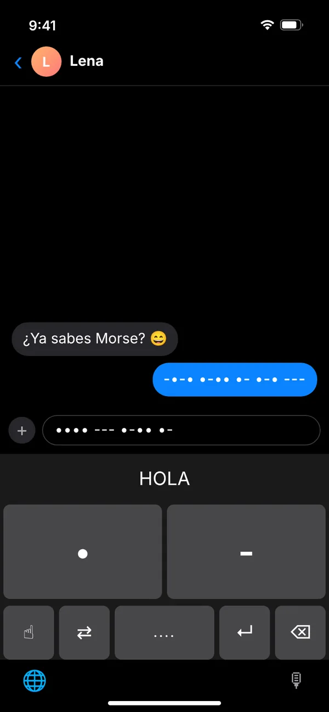
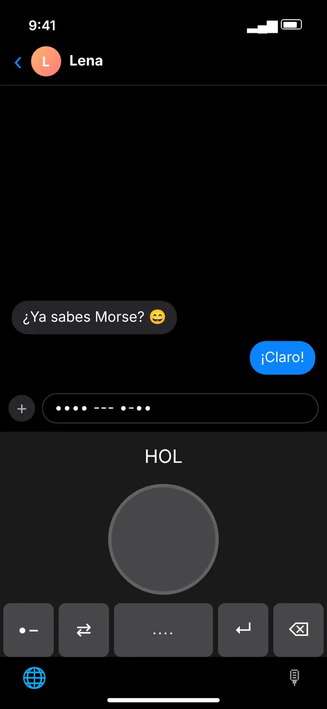

- Descarga MorseLux en el App Store. Descárgalo en elApp Store
- Abre Ajustes → General → Teclado → Teclados.
- Toca Añadir teclado nuevo… y elige MorseLux.
- Opcional: toca MorseLux y activa Permitir acceso total para que el teclado use tus ajustes de la app, el manipulador (Pro) y la vibración al escribir.
- En cualquier app, toca la tecla del globo 🌐 para cambiar al teclado Morse.
MorseLux › Teclado
·–·· ··– –··– Gratis · teclado para iPhone · en cualquier app
Teclado Morse para iPhone
Escribe en código Morse en tu iPhone, en cualquier app: WhatsApp, iMessage, Instagram, Notas. El teclado de MorseLux ofrece tres formas de escribir: teclas de punto y raya y letras normales que se convierten en Morse (ambas gratis), y un manipulador como el del telégrafo (Pro).
Descárgalo en elApp Store
- ✓ Dos modos gratis
- ✓ Listo en un minuto
- ✓ Funciona sin internet
- ✓ No guarda nada de lo que escribes



Así se ve el teclado Morse en la app, aquí en un chat (ilustración).
Tres formas de escribir con el teclado Morse
·–
Teclas de punto y raya Gratis
Escribes cada letra en Morse. El teclado te muestra qué letra estás formando.
Escribes ···· → H
Aa
Letras a Morse Gratis
Escribes normal y en el mensaje aparece código Morse. Perfecto para mensajes secretos.
Escribes Hola → ···· ––– ·–·· ·–
👆
Tecla única Pro
Una tecla grande como la de un telégrafo: toque corto para punto, mantener para raya, con sonido.
Corto, corto, corto → S
Listo en un minuto
Funciona en todas las apps donde escribes
WhatsAppiMessageInstagramTelegramSnapchatTikTokSignalNotasMailSafari
El teclado Morse es un teclado del sistema. Cambias con la tecla del globo 🌐 y tu teclado normal sigue igual.
3 formas de escribir en Morse en el iPhone
| Teclado MorseLux | Gboard (Google) | Otras apps de teclado Morse | |
|---|---|---|---|
| Precio | Gratis (manipulador con Pro) | Gratis | Depende |
| Teclas de punto y raya | ✓ | ✓ | ✓ |
| Escribir letras, enviar Morse | ✓ | – | Algunas |
| Idioma | App y teclado en español, inglés y alemán | Diseño Morse para inglés (EE. UU.), según la ayuda de Google | Depende |
| Aprender Morse | ✓ Lecciones, entrenador y traductor en la misma app | Juego web aparte | Pocas veces |
¿Sin app? Escribe tu mensaje en el traductor de código Morse y copia el Morse en cualquier chat.
Ideas para el teclado Morse
🧠
Aprender sin darte cuenta
Cada mensaje en Morse es práctica. Los signos se quedan antes que con cualquier tabla.
🧩
Acertijos y geocaching
Envía pistas para una gymkana, un escape room o un geocaché directamente en Morse.
💬
Diversión en los grupos
Un «buenas noches» en Morse, una broma interna o un estado en Morse en tu bio.
¿Qué es gratis y qué es Pro?
Gratis: las teclas de punto y raya y el modo de letras a Morse, sin límite de tiempo. MorseLux Pro desbloquea el manipulador y todas las lecciones de la app (suscripción mensual o anual – la anual con 1 semana de prueba gratis – o compra única; precio en el App Store).
Gratis: las teclas de punto y raya y el modo de letras a Morse, sin límite de tiempo. MorseLux Pro desbloquea el manipulador y todas las lecciones de la app (suscripción mensual o anual – la anual con 1 semana de prueba gratis – o compra única; precio en el App Store).
🔒 Tus mensajes se quedan contigo
El teclado no guarda ni envía lo que escribes, no lee el portapapeles y funciona sin conexión a internet. Solo necesita acceso total para tus ajustes de la app, el desbloqueo Pro (manipulador) y la vibración al escribir. Los detalles están en la política de privacidad.
El teclado no guarda ni envía lo que escribes, no lee el portapapeles y funciona sin conexión a internet. Solo necesita acceso total para tus ajustes de la app, el desbloqueo Pro (manipulador) y la vibración al escribir. Los detalles están en la política de privacidad.
Preguntas frecuentes
¿Cómo escribo en código Morse en el iPhone?
Con un teclado Morse: instala MorseLux y abre Ajustes → General → Teclado → Teclados → Añadir teclado nuevo → MorseLux. En cualquier app cambias con la tecla del globo. Sin app, puedes escribir Morse en el traductor online y copiarlo.
¿Hay un teclado Morse gratis para iPhone?
Sí. El teclado de MorseLux es gratis: las teclas de punto y raya y el modo de letras a Morse no cuestan nada; solo el manipulador forma parte de MorseLux Pro. Gboard de Google también tiene un diseño Morse gratuito, pero, según la ayuda de Google, solo en inglés (EE. UU.).
¿Cómo añado un teclado Morse a mi iPhone?
Instala MorseLux y ve a Ajustes → General → Teclado → Teclados → Añadir teclado nuevo y elige MorseLux. En cualquier app, toca la tecla del globo para cambiar al teclado Morse.
¿El teclado Morse funciona en WhatsApp?
Sí. Es un teclado del sistema, así que funciona en WhatsApp, iMessage, Instagram, Telegram, Mail, Notas y cualquier otra app con un campo de texto.
¿Por qué el teclado pide «Acceso total»?
El teclado solo necesita acceso total para usar tus ajustes de la app, el desbloqueo Pro (manipulador) y la vibración al escribir. No guarda lo que escribes, no lee el portapapeles y no envía nada por internet. Sin acceso total, las teclas de punto y raya y «letras a Morse» funcionan con los ajustes predeterminados.
¿Puedo escribir letras normales y enviar Morse?
Sí. En el modo «Letras a Morse» escribes normal y el teclado escribe puntos y rayas. Es la forma más fácil de enviar mensajes secretos.
¿El teclado Morse es gratis?
Las teclas de punto y raya y el modo «Letras a Morse» son gratis. El manipulador, una sola tecla que tocas corto y largo como en un telégrafo, forma parte de MorseLux Pro.
¿Hay un teclado Morse para Android?
MorseLux es para iPhone. En Android, Gboard de Google tiene un diseño de código Morse. En cualquier celular también puedes usar el traductor online y copiar el Morse.
¿Necesito saber Morse para usar el teclado?
No. En el modo de letras a Morse escribes normal y el teclado escribe el código Morse. Si quieres aprenderlo, la app tiene lecciones diarias y en esta web hay un entrenador Morse gratuito.